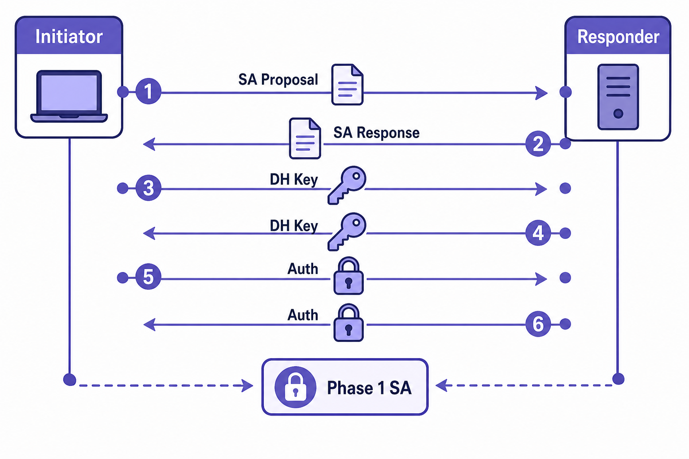

Overview
IKE (Internet Key Exchange) is the protocol responsible for negotiating and establishing the Security Associations (SAs) that IPsec uses to protect data traffic. Phase 1 of IKE has a single job: establish a secure, authenticated channel between two VPN peers so that Phase 2 negotiation (and all subsequent IKE messages) can be protected. At the end of a successful Phase 1, both peers share a common IKE SA — a cryptographic context containing shared keys, agreed algorithms, and authentication state. This IKE SA protects everything that follows.
Phase 1 can operate in two modes. Main mode uses six messages exchanged in three pairs: the first pair negotiates the SA proposal (encryption algorithm, hash, authentication method, DH group, SA lifetime); the second pair performs the Diffie-Hellman key exchange, after which both sides independently derive the same shared secret without transmitting it; the third pair exchanges authentication data (PSK hash or certificate), protected by the keys derived in the second exchange. Aggressive mode compresses this to three messages — the initiator sends all its parameters in a single message, reducing round trips at the cost of exposing the identity of both peers before any encryption is applied. FortiGate supports both modes; aggressive mode is required when the initiating peer has a dynamic IP address and is using PSK authentication, but is generally avoided for security reasons in modern deployments.
The Diffie-Hellman group determines the mathematical structure and key size used for the key exchange. DH group 1 and 2 (768-bit and 1024-bit Oakley) are cryptographically broken and should never be used. Groups 14 (2048-bit MODP) and above are considered acceptable, with groups 19, 20, and 21 (elliptic curve) preferred for current deployments. All Phase 1 parameters — encryption algorithm, hash/PRF algorithm, authentication method, DH group, and SA lifetime — must match between peers for Phase 1 to succeed. The negotiation is not a full bidirectional selection process; each side offers a list of acceptable proposals and the responder picks the first proposal it can match.

Flat illustration of IKE Phase 1 main mode six-message exchange
Target Questions
These are the questions your Socratic session will explore. Read them before you start — they tell you what understanding to look for while reviewing the study guide.
- 1What is the purpose of IKE Phase 1 — what is created at the end of a successful Phase 1?
- 2What is the difference between IKE main mode and aggressive mode — how many messages does each use?
- 3What are the three authentication methods available in IKE Phase 1?
- 4What is a Diffie-Hellman group and what role does it play — which groups are considered secure today?
- 5What parameters must match exactly between peers for Phase 1 to succeed?
- 6What is the IKE SA lifetime and what happens when it expires?
- 7Why is aggressive mode considered less secure than main mode?